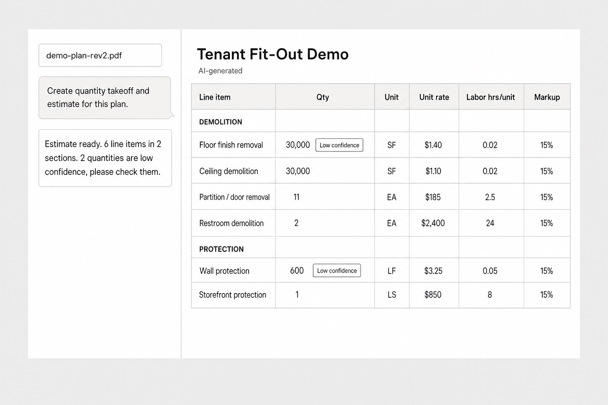
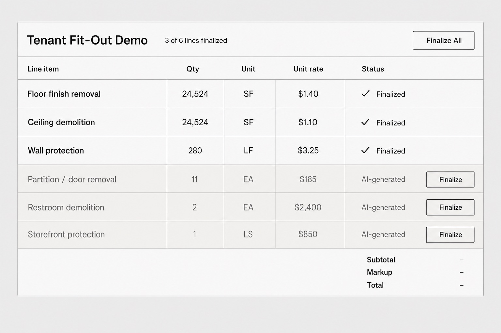

What Estbuild is
When a building is renovated or torn down, a general contractor asks demolition contractors to bid on the work. Each contractor has an estimator, the person who works out the price. The estimator reads the building's drawings, measures everything to be removed, and applies costs to reach a final number.
Estbuild set out to automate that work: upload a plan, get a cost estimate.
The problem
Preparing one bid took about 10 hours, according to the estimators we interviewed. The work is spread across four disconnected tools, and numbers are copied by hand between them. A miscopied number can mean a lost job, or a won job that loses money.
As a founder, I also wanted to know what those hours cost the business. At the $5–10M-revenue contractors we spoke to, one estimator writes 150–200 bids a year and wins only 5–20% of them. That's ~1,200–1,900 hours and ~$60–140K a year on bids that never become work. The average job is worth ~$375K, so a single point of win rate is worth about $650K in revenue. Estimating isn't back-office overhead. It's the ceiling on how fast these companies can grow.
My role and research
We were three co-founders. Our estimating co-founder brought the domain knowledge and our technical co-founder built the AI. I owned research, problem framing, workflow and interaction design, and prototype testing.
I started by finding out how far our co-founder's experience held across the industry, growing from initial interviews to about 30 conversations with estimators and contractors. That changed my question from "do people want automation?" to: what work would we need to remove before an estimator would consider changing tools?
First idea: automate two of the three parts
An estimate has three parts. Two of them worked in code, so I proposed starting there, which let a three-person team ship something smaller and learn through use.
| Part | What it involves | First version |
|---|---|---|
| Identify the work | Read the plan and list every item of work | Automated |
| Measure it | Work out dimensions and quantities | 0% automated: the estimator enters them |
| Calculate costs | Apply rates to the quantities | Automated |
The tradeoff was deliberate. We cut engineering scope, and left a large part of the workflow with the user. I believed the automation that remained would make switching worthwhile.
What users told us: two out of three wasn't enough
When we first showed this to users, they weren't willing to move to a new platform with only line items and cost calculation solved. Measuring was the work they wanted gone.
We kept working on measurement, and reached about 30% accuracy. That still wasn't enough. Until measurement was about 60–70% accurate, moving to our platform was out of the question for them.
That left a founder's decision: keep shipping what we could build, or design for what would get people to switch.
What should we design for?
The design: 70% accurate, 30% customizable
I designed a concept showing what the product looks like when measurement is 70% accurate. The estimator gets a complete estimate, then corrects the remaining 30% error through customization. That addresses adoption, and it defines what the final automated product has to deliver.
A complete estimate from an imperfect system only works if people stay in charge of it. That shaped three design decisions.
A chat beside a structured estimate
The table uses the columns estimators already live in, so it reads like their own spreadsheet. In testing, estimators went straight to the table. The workspace, not the conversation, was the product to them.

AI-generated and approved can never look alike
When the AI fills every line, the estimator needs to see at a glance which numbers they've personally signed off on.

Show where to look, honestly
The design showed measurement confidence as a percentage out of 100, to point people to where closer inspection might be needed. Because the measurement system was unfinished, this remained a proposed interaction. We hadn't established that its percentages predicted correctness.
How we tested it
Customization only helps if people notice what needs correcting, so we tested that directly. We ran the prototype with 10 estimators. Our estimating co-founder prepared the measurements and correct answers in advance, so we could study the experience before the technology was ready.
Most scenarios had about 10–30% missing or incorrect line items, added on purpose:
- The missing wall. We left out the longest wall scheduled for demolition. A participant noticed and opened customization, where the prototype supplied the prepared correction.
- The pool area. The estimate missed renovation work around the pool. A participant spotted it and reached the accurate result.
These moments showed people could recognize certain missing work and use the correction flow. They didn't show that users would catch every error, or fix inaccurate measurements on their own.
What we learned
Time. Recorded prototype tasks averaged about 1 hour, against about 10 hours reported for a real bid. I don't call that a 90% reduction. One is a self-reported process and the other is a task with the hard work prepared in advance. It suggests potential savings, not a before-and-after result.
Demand. We asked whether they'd pay $799/month for full automation with customization. 8 said yes and 2 were unsure. The same 8 said they would use it on real bids. All 10 asked to be contacted when it was ready. This was stated interest, conditional on delivering the complete product. It was not a purchase.
Trust. Price wasn't their objection. Accuracy was. They'd trust AI measurement if its answers were accurate, and not at the accuracy we had then. The two unsure participants also questioned whether leaving familiar tools would be worth the hassle.
For a founder, that answer was useful and uncomfortable: demand looked real, and all of it rested on the part we hadn't finished.
Why AI, and where it fell short
Not everything here needed AI. Cost arithmetic runs on explicit rates and rules. AI's job was to read varied plans and reduce the manual work of identifying and measuring what belongs in the estimate.
That's also where it got hard. Identifying a discrete object, like a bathroom sink, was easier than interpreting walls and deriving their dimensions from 2D plans at different scales. Recognizing an object isn't the same as knowing how much of it needs to be priced.
How I'd build it next
This is a proposed next step, not something we completed. I'd make measurement accuracy the gate before expanding the product:
- Define a supported use case. A bounded set of plan types where the required dimensions are available.
- Evaluate measurement against expert answers. Test scope and dimensions separately, on representative plans.
- Make results inspectable. Connect quantities to their drawing evidence, and show confidence scores only once their meaning has been evaluated.
- Calculate costs explicitly. Editable rates and deterministic calculations on reviewed quantities.
- Test the entire task. Compare with the existing workflow on comparable projects.
The deciding measure is how much work remains after checking and correcting the result.
Where it ended, and what I learned
Estbuild reached working line-item generation and cost calculation, measurement at about 30% accuracy, and a tested concept of the full experience. Development paused when our technical co-founder moved on.
My most consequential decision was going back on the release strategy I had proposed. Starting with what we could build made sense for the team, but it didn't remove enough work to make anyone switch.
I'd carry that into the next product: define a first release around a complete user outcome, then test the hardest assumption behind that outcome early. Ease of use, technical feasibility and willingness to adopt have to hold together.